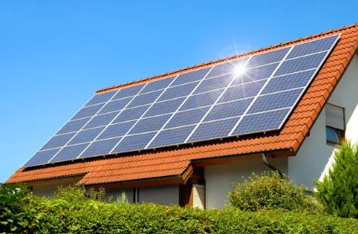
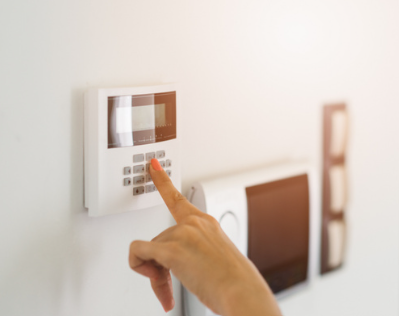

Our Services
Solar Paneling
At Fitzwilliam Electrical, we offer state-of-the-art solar panel installation services to help you take advantage of the abundant energy provided by the sun. We offer a comprehensive range of solar panel services:
1. Solar Panel Installation Services: Our experts will assess your property, we design a customised solar panel system, and install it with precision and care.
2. Solar Panel Maintenance: Regular maintenance is essential to keep your solar panels performing at their best. We offer maintenance services to ensure optimal efficiency.
3. Solar Panel Repairs: If your solar panels require repairs, our technicians are on hand to diagnose and fix any issues promptly.We offer a 24/7 call out service.
Home Alarm Systems
Our home alarm systems provide protection against intrusion, fire, and other emergencies, ensuring that your property is safeguarded 24/7.we offer a wide range of alarm system services:
1. Intrusion Alarms: Protect your property from unauthorised access with our intrusion alarm systems. We offer alarm system installation.We provide door and window sensors, motion detectors, and glass break sensors to keep intruders at bay. Providing reliable home security systems.
2. Fire Alarms: Early detection of fires is crucial for safety. Our fire alarm systems are designed to alert you and the fire department at the first sign of smoke or heat.
3. Security Cameras: Keep an eye on your property with our high-definition security cameras. View live footage and recordings from your smartphone or computer, and ensure that your premises are secure.
Emergency Call Out

At Fitzwilliam Electrical, we understand that emergencies can happen at any time, day or night. That's why we're proud to offer our Rapid Response Emergency Call-Out Service, providing you with the peace of mind that help is just a phone call away. We guarantee a call-out within 5 hours, 24/7, to resolve your urgent issues promptly and professionally.
Fast and Reliable Service: When you're faced with an emergency, you need a fast and reliable response. We are committed to being at your location within 5 hours or less, no matter the time of day or night.
Highly Trained Professionals: Our team of skilled technicians and experts are experienced in handling alarms and solar panel issues.
24/7 Availability: Emergencies don't keep regular hours, and neither do we. We're on call around the clock, ensuring that you can get the help you need, when you need it most.
| Home Alarms | Emergency Call Out | Solar Paneling |
|---|---|---|
| Starting from €599 | €20 per month | Starting from €299 |